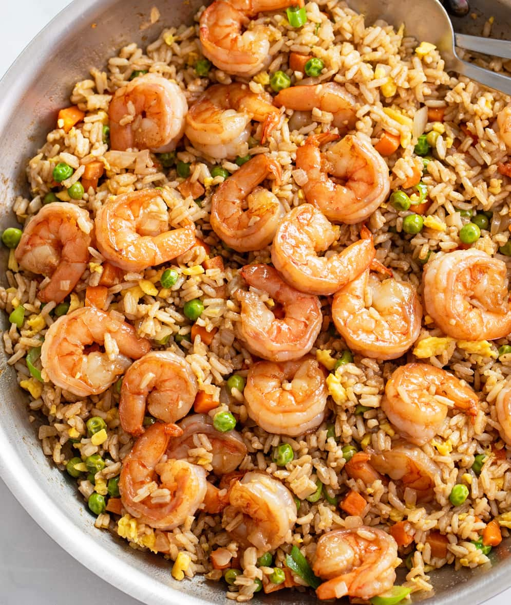

Shrimp Fried Rice

En snabb, smakrik och proteinrik asiatisk vardagsrätt med saftiga räkor, stekt ris, ägg och krispiga grönsaker med smak av soja, vitlök och sesamolja.
Förberedelse: 10 minuter | Tillagning: 20 minuter | Total tid: 30 minuter | Svårighetsgrad: Enkel | 2 portioner
Näringsvärde per portion: 560 kcal | Protein: 47 g
Ingredienser
- 250 g skalade räkor
- 300 g kokt ris
- 2 st ägg
- 1 st morot
- 100 g gröna ärtor
- 2 st salladslökar
- 2 st vitlöksklyftor
- 2 msk japansk soja
- 1 tsk sesamolja
- 1 msk neutral matolja till stekning
- 0,5 tsk svartpeppar
Till servering
- 1 st salladslök
- 1 msk rostade sesamfrön
- Limeklyftor
Instruktioner
- Koka riset enligt anvisningarna på förpackningen och låt det svalna. Använd gärna kallt ris från dagen innan för bästa resultat.
- Skala och hacka moroten i små bitar. Finhacka vitlöken och skiva salladslöken tunt.
- Hetta upp hälften av matoljan i en stor stekpanna eller wok. Stek räkorna snabbt i 1–2 minuter tills de fått lite färg. Ta upp räkorna och lägg åt sidan.
- Tillsätt resten av oljan i pannan och stek moroten, ärtorna och vitlöken i några minuter tills grönsakerna mjuknat något men fortfarande har lite krisp.
- Skjut grönsakerna åt sidan i pannan och knäck ner äggen. Rör runt tills äggen börjar stelna och blanda sedan ihop med grönsakerna.
- Tillsätt det kalla riset och stek allt tillsammans under omrörning i 2–3 minuter så att riset blir genomvarmt och får lite stekyta.
- Tillsätt japansk soja, sesamolja och svartpeppar. Rör om ordentligt så att smakerna fördelas jämnt.
- Vänd ner räkorna och stek ytterligare någon minut tills allt är genomvarmt.
- Lägg upp på tallrikar och toppa med skivad salladslök och rostade sesamfrön. Servera gärna med limeklyftor.